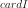
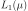
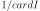
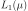
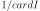

WeightedExperiment¶
-
class
WeightedExperiment(*args)¶ Weighted experiment.
- Available constructor:
- WeightedExperiment(distribution=ot.Uniform(), size=100)
Parameters: distribution :
DistributionDistribution
 used to generate the set of input data.
used to generate the set of input data.size : positive int
Number  of points that will be generated in the experiment.
Notes
WeightedExperiment is used to generate the points
 so that the
mean
so that the
mean  is approximated as follows:
is approximated as follows:where
is a distribution,  is a function 
and are the weights associated with the points. By default,
all the weights are equal to .
is a function 
and are the weights associated with the points. By default,
all the weights are equal to .A WeightedExperiment object can be created only through its derived classes which are distributed in three groups:
- The first category is made up of the random patterns, where the set of input data is generated from the joint distribution of the input random vector, according to these sampling techniques:
- The second category contains the
low discrepancy sequences. OpenTURNS proposes the Faure, Halton, Haselgrove, Reverse Halton and Sobol sequences. - The third category consists of deterministic patterns:
Methods
generate()Generate points according to the type of the experiment. generateWithWeights()Generate points and their associated weight according to the type of the experiment. getClassName()Accessor to the object’s name. getDistribution()Accessor to the distribution. getId()Accessor to the object’s id. getImplementation(*args)Accessor to the underlying implementation. getName()Accessor to the object’s name. getSize()Accessor to the size of the generated sample. hasUniformWeights()Ask whether the experiment has uniform weights. setDistribution(distribution)Accessor to the distribution. setName(name)Accessor to the object’s name. setSize(size)Accessor to the size of the generated sample. -
__init__(*args)¶ x.__init__(…) initializes x; see help(type(x)) for signature
-
generate()¶ Generate points according to the type of the experiment.
Returns: sample :
SamplePoints
 which constitute the design of experiments
with
which constitute the design of experiments
with  . The sampling method is defined by the nature of
the weighted experiment.
. The sampling method is defined by the nature of
the weighted experiment.Examples
>>> import openturns as ot >>> ot.RandomGenerator.SetSeed(0) >>> myExperiment = ot.MonteCarloExperiment(ot.Normal(2), 5) >>> sample = myExperiment.generate() >>> print(sample) [ X0 X1 ] 0 : [ 0.608202 -1.26617 ] 1 : [ -0.438266 1.20548 ] 2 : [ -2.18139 0.350042 ] 3 : [ -0.355007 1.43725 ] 4 : [ 0.810668 0.793156 ]
-
generateWithWeights()¶ Generate points and their associated weight according to the type of the experiment.
Returns: sample :
SampleThe points which constitute the design of experiments. The sampling method is defined by the nature of the experiment.
weights :
Pointof sizeWeights
 associated with the points. By default,
all the weights are equal to .
associated with the points. By default,
all the weights are equal to .Examples
>>> import openturns as ot >>> ot.RandomGenerator.SetSeed(0) >>> myExperiment = ot.MonteCarloExperiment(ot.Normal(2), 5) >>> sample, weights = myExperiment.generateWithWeights() >>> print(sample) [ X0 X1 ] 0 : [ 0.608202 -1.26617 ] 1 : [ -0.438266 1.20548 ] 2 : [ -2.18139 0.350042 ] 3 : [ -0.355007 1.43725 ] 4 : [ 0.810668 0.793156 ] >>> print(weights) [0.2,0.2,0.2,0.2,0.2]
-
getClassName()¶ Accessor to the object’s name.
Returns: class_name : str
The object class name (object.__class__.__name__).
-
getDistribution()¶ Accessor to the distribution.
Returns: distribution :
DistributionDistribution used to generate the set of input data.
-
getId()¶ Accessor to the object’s id.
Returns: id : int
Internal unique identifier.
-
getImplementation(*args)¶ Accessor to the underlying implementation.
Returns: impl : Implementation
The implementation class.
-
getName()¶ Accessor to the object’s name.
Returns: name : str
The name of the object.
-
getSize()¶ Accessor to the size of the generated sample.
Returns: size : positive int
Number of points constituting the design of experiments.
-
hasUniformWeights()¶ Ask whether the experiment has uniform weights.
Returns: hasUniformWeights : bool
Whether the experiment has uniform weights.
-
setDistribution(distribution)¶ Accessor to the distribution.
Parameters: distribution :
DistributionDistribution used to generate the set of input data.
-
setName(name)¶ Accessor to the object’s name.
Parameters: name : str
The name of the object.
-
setSize(size)¶ Accessor to the size of the generated sample.
Parameters: size : positive int
Number of points constituting the design of experiments.